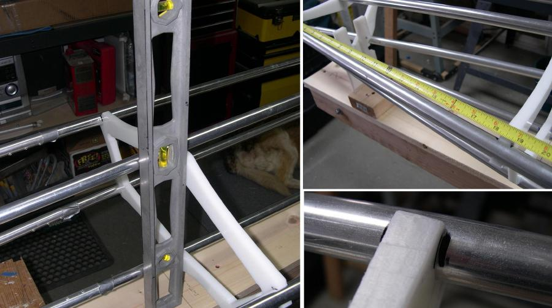

| Cross Section Rivet Stops (2 of 5) | Menu Previous Page Next Page |
|

Alignment - Use a level to align the cross sections vertically, and a tape measure to align them horizontally based on the designed cross section spacing. Sections 1 and 8 are mounted on stations, and are used as a reference for all other sections. After alignment, place a permanent marker line on the stringers at each side of the cross section to stringer locations. These marks will indicate the rivet locations.
|
|